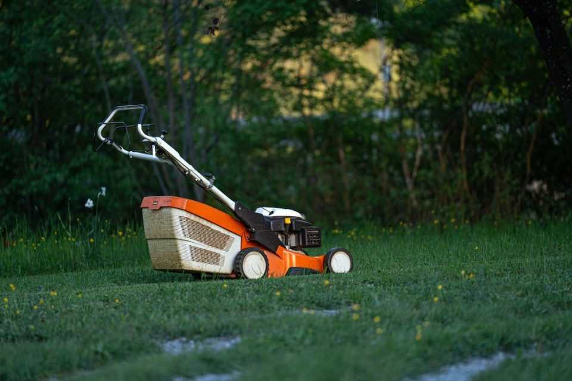
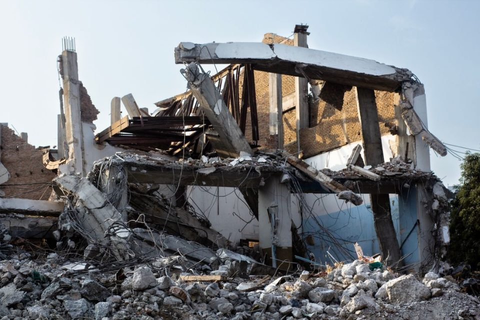
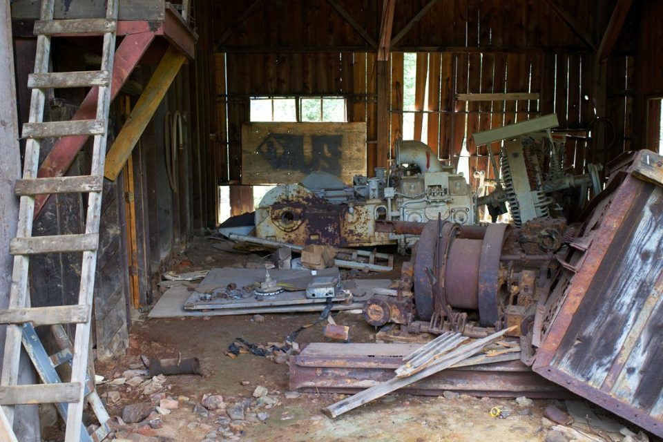

Kleinabriss
Bauten und Bauteile, die komplett weg sollen, vom Gartenhaus bis zur Garage.

Leistung · Wanddurchbruch
Sie brauchen eine neue Tür, eine Durchreiche zur Küche oder einen Durchgang ins Nachbarzimmer? Wir brechen die Öffnung staubarm in die Wand und nehmen den Schutt mit. Ist die Wand tragend, geht es nur mit Statiker. Den bringen wir mit.
Beim Wanddurchbruch bleibt die Wand stehen. Wir schaffen nur eine Öffnung darin. Typische Aufträge:
Soll die Wand ganz weg oder kommen auch Bad, Fliesen oder Estrich raus, ist das ein Innenabbruch. Woran Sie eine tragende Wand erkennen und was Sie rechtlich vorher klären müssen, steht ausführlich im Ratgeber Tragende Wand entfernen.
Eine nichttragende Wand trägt keine Decke. Sie lässt sich in der Regel ohne Statiker öffnen. Vorher ist trotzdem einiges zu klären:
In einer gemauerten Wand braucht die Öffnung oben einen Sturz, damit das Mauerwerk darüber hält. Wer ihn einsetzt, klären wir bei der Besichtigung. In einer Ständerwand aus Gipskarton wird die Öffnung mit neuen Profilen eingefasst, auch das besprechen wir vorher. Den Schutt trennen wir nach Sorten und entsorgen ihn.
Vorsicht bei Wänden zwischen zwei Wohnungen und bei Wänden zum Treppenhaus: Auch wenn sie nicht tragen, gelten für sie in Mehrfamilienhäusern meist Brandschutzanforderungen (§ 29 und § 35 Hamburgische Bauordnung). Solche Wände öffnen wir nur mit Planung.
Eine tragende Wand hält Decken oder Wände über ihr. Jedes Gebäude muss im Ganzen und in seinen einzelnen Teilen standsicher sein (§ 12 Hamburgische Bauordnung). Bekommt eine tragende Wand eine Öffnung, muss die Last darüber deshalb auf anderem Weg abgetragen werden.
Ob für den Eingriff ein Antrag oder ein geprüfter Nachweis nötig ist, hängt vom Gebäude ab. Das klärt der Statiker. Im Zweifel gibt das Fachamt Bauprüfung Ihres Bezirksamts Auskunft. Ohne Berechnung fassen wir eine tragende Wand nicht an.
Was Gerichte dazu entschieden haben, steht im Ratgeber Tragende Wand entfernen. Was bei Denkmälern gilt, lesen Sie unter Abriss-Genehmigung in Hamburg.
In älteren Gebäuden können Putz, Spachtelmassen und Fliesenkleber Asbest enthalten. Beim Stemmen und Schneiden einer Öffnung können dann Fasern frei werden. Hat der Bau vor dem 31. Oktober 1993 begonnen, klären wir deshalb vor dem Durchbruch, ob eine Probe nötig ist. Das Baujahr und Ihr Wissen über mögliche Schadstoffe müssen Auftraggeber der Firma seit Dezember 2024 vorher mitteilen, auch Privathaushalte (§ 5a Gefahrstoffverordnung).
Bestätigt sich der Verdacht, bauen wir das Material nicht selbst aus. Auf Wunsch vermitteln wir Ihnen einen Fachbetrieb, der für diese Asbestarbeiten berechtigt ist. Den Durchbruch machen danach wir. Die Asbestsanierung ist nicht im Festpreis enthalten. Mehr dazu im Ratgeber Asbest vor Abriss und Umbau.
Stemmen ist laut und in Mehrfamilienhäusern oft über mehrere Etagen zu hören. Sagen Sie Nachbarn und Hausverwaltung vorher Bescheid. Termine am Abend oder am Samstag legen wir so, dass sie zu den Lärmschutzregeln passen.
Den Festpreis inklusive Entsorgung nennen wir Ihnen nach der kostenlosen Besichtigung. Er ändert sich nur, wenn sich der Auftrag ändert. Eine Asbestsanierung ist darin nicht enthalten.
Häufige Fragen
Ja, wenn die Wand tragend ist oder Zweifel bleiben. Dann berechnet der Statiker, wie die Last über der Öffnung abgefangen wird. Den Statiker bringen wir mit. Eine nichttragende Wand öffnen wir in der Regel ohne Statiker.
Das hängt vom Gebäude ab. Bei einer tragenden Wand klärt das der Statiker, im Zweifel das Fachamt Bauprüfung des Bezirksamts. Bei Denkmälern und in Erhaltungsgebieten kann auch ein kleiner Eingriff genehmigungspflichtig sein. In der Mietwohnung brauchen Sie außerdem die Zustimmung des Vermieters.
Ganz ohne Staub geht es nicht. Wir arbeiten staubarm und schützen die übrigen Räume, damit Sie sie weiter nutzen können. Wie das bei Ihnen aussieht, besprechen wir bei der Besichtigung.
Ein eingetragener Elektro- oder Installationsbetrieb legt sie vorher still oder verlegt sie. Wir sagen Ihnen bei der Besichtigung, bis wann das erledigt sein muss. Erst danach brechen wir die Öffnung.
Je nach Auftrag setzen wir den Stahlträger selbst ein oder ein Rohbaubetrieb übernimmt das. Bei einer tragenden Wand gibt der Statiker vor, welcher Träger es sein muss. Das klären wir bei der Besichtigung.
Dann klären wir vor Beginn, ob Putz, Spachtel oder Kleber an der Stelle Asbest enthalten können und ob eine Probe nötig ist. Asbest bauen wir nicht selbst aus. Mehr dazu im Ratgeber Asbest vor Abriss und Umbau.
Kontakt
Kostenlos und unverbindlich, vor Ort oder per Video. Wir melden uns innerhalb eines Werktags.
Alles aus einer Hand
Bauten und Bauteile, die komplett weg sollen, vom Gartenhaus bis zur Garage.

Räume bis auf den Rohbau zurück, z. B. vor einer Sanierung.
Gezielter Rückbau einzelner Bauteile in bewohnten Häusern.

Nach dem Abriss direkt neu aufbauen, ohne zweite Firma.
Schutt von Ihrer Renovierung abholen lassen, auch ohne Abriss.

Wohnung, Keller, Dachboden oder Garage leer räumen, auch ganze Haushalte.

Garten oder Kleingarten komplett räumen: Laube, Platten, Grün, Gerümpel.

Pflaster, Gehweg- und Terrassenplatten aufnehmen und entsorgen.

Hecke schneiden, Sträucher entfernen, Grünschnitt abfahren.

Bäume fällen und abfahren, Genehmigung vorher geklärt.

Rasen mähen, Unkraut jäten, Beete pflegen, einmalig oder regelmäßig.

Laub entfernen und abfahren, den Garten winterfest machen.

Rasen säen oder Rollrasen verlegen, Beete vorbereiten, einfache Wege.

Scheunen, Ställe, Schuppen und andere Nebengebäude auf dem Hof abreißen.

Scheune, Lager und Stall räumen: Altgeräte, Holz, Metall, Reifen.

Zäune ab- und aufbauen, Feldränder und Knicks, Aufräumen nach Sturm.